O site da fornada
Mostra o cardápio da semana, as vagas e recebe os pedidos. Lotou ou pausou? Fecha sozinho.
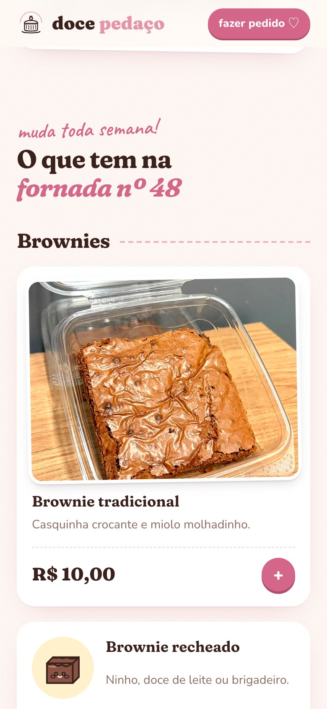
Site para as clientes pedirem, painel para organizar a semana e um assistente que faz as tarefas com você. Tudo com a cara da sua etiqueta, no celular e no computador.
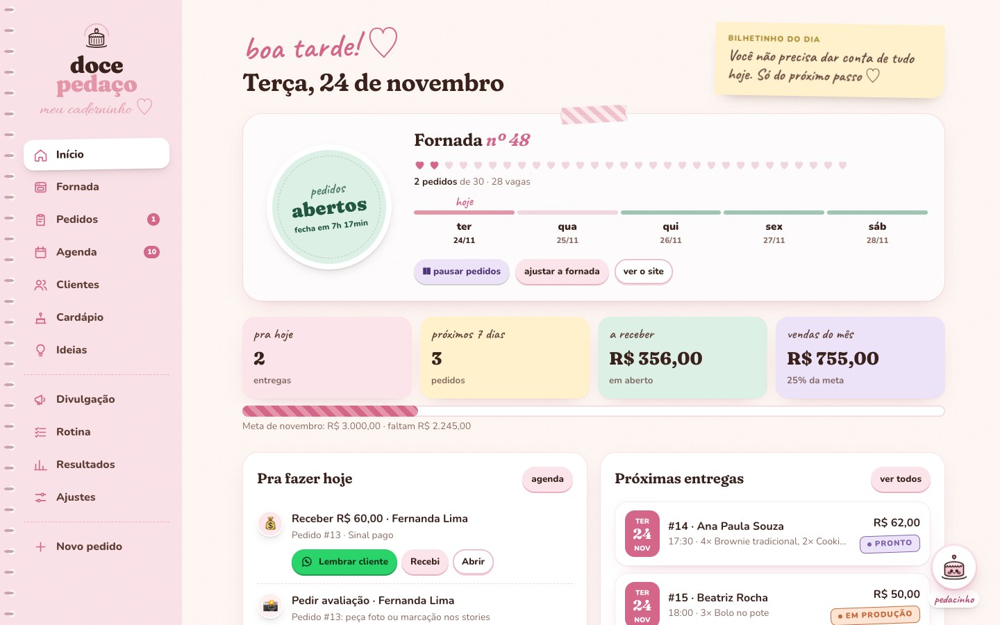
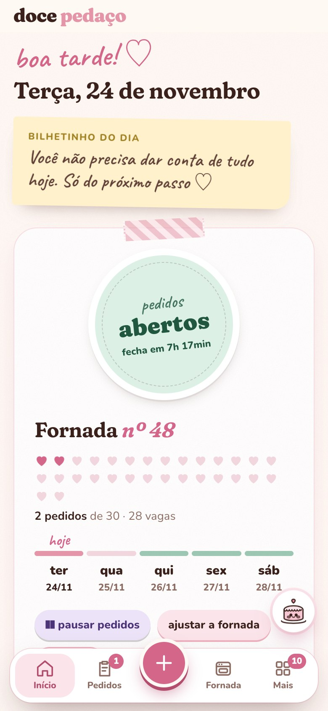
como funciona
A cliente pede no site, o pedido cai sozinho no seu caderninho, e o Pedacinho te ajuda a dar conta de tudo.
Mostra o cardápio da semana, as vagas e recebe os pedidos. Lotou ou pausou? Fecha sozinho.

Pedidos, clientes, lembretes, fornada, ideias e divulgação. Instala no iPhone como app.

Fale ou escreva: ele anota pedido, muda status, pausa a fornada, te lembra das coisas e conta como vão as vendas.
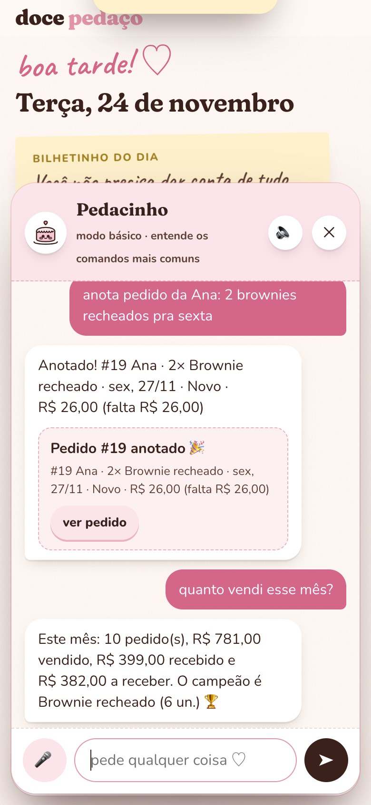
uma semana
Pedidos num dia só, entregas depois: menos correria e mais previsibilidade.
Escolhe o que vai ter na fornada e o limite de pedidos.
O site abre o dia todo (dá pra estender até quarta de manhã).
Mãos na massa. Entrega à noite, se você quiser.
A cliente escolhe o dia e se retira ou recebe.
Opcionais. Depois: avaliação e foto.
o que ele faz
Limite de pedidos e de cada doce. Pausa com um toque, reabre sozinha na terça.
Caem no caderninho com a cliente cadastrada, e com confete.
Confirmar, produzir, entregar, cobrar, pedir avaliação, aniversário de cliente.
Mensagens de confirmação, pronto, cobrança e pós-venda já escritas.
Iguais à sua, com o nome da cliente e a validade calculada.
Conta os pedidos sozinho e avisa quando a cliente ganha o brinde.
O que está em alta, com fontes. Doces, salgados, veganos e low carb.
Suas fotos viram post e story com a sua identidade.
Vendas, lucro estimado, mais vendidos e de onde vêm as clientes.
Primeiro pedido, fornada lotada, meta batida… cada uma com festa.
Instala como app e sincroniza os dois (com a nuvem ligada).
Só ela acessa os dados. Regras do limite conferidas no servidor.
por dentro
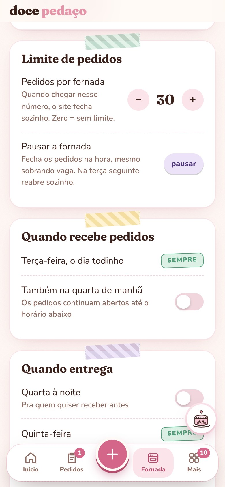
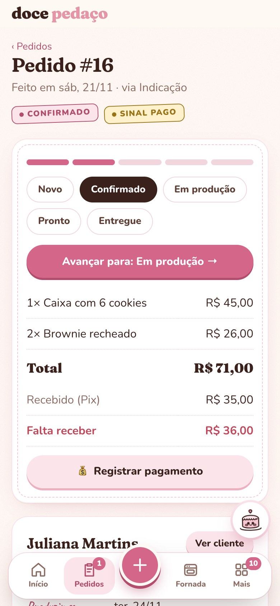
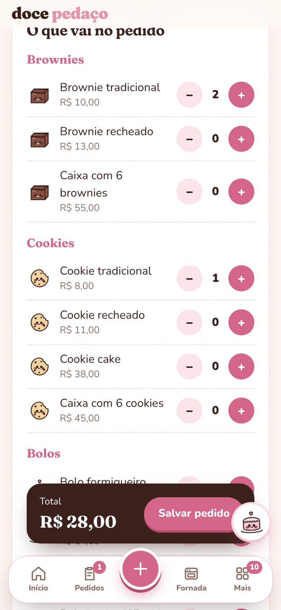
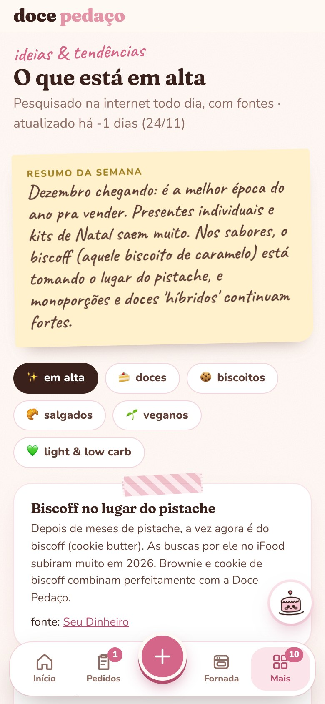
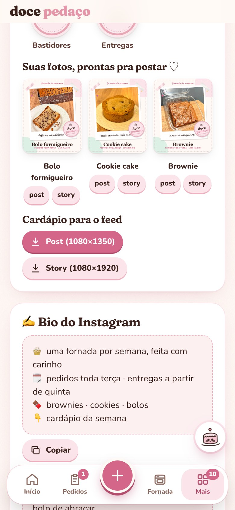
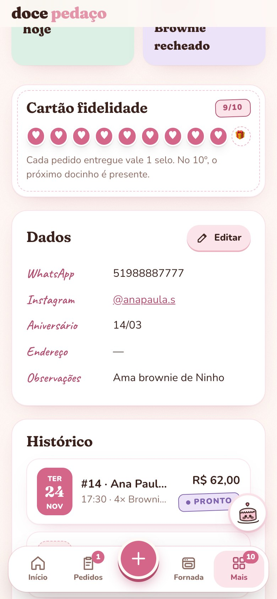

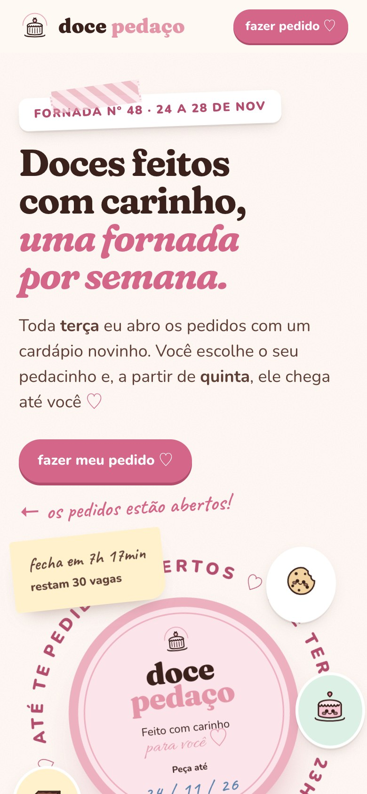
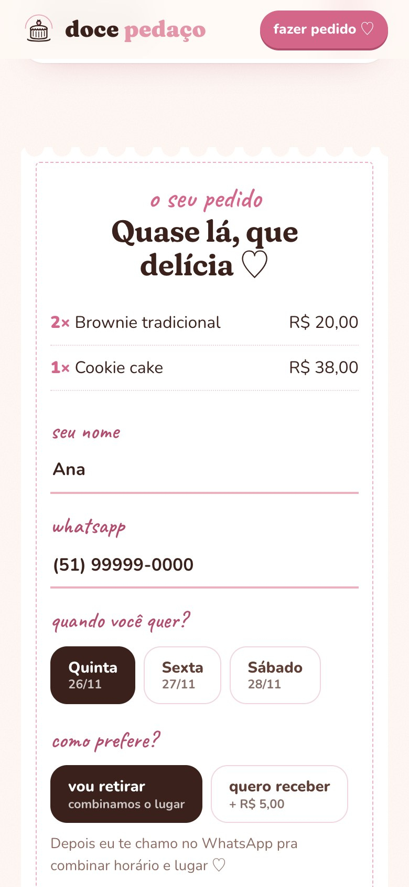
seu assistente
Ele mora no cantinho do caderninho. Toque nele e escreva, ou fale pelo microfone.
em um minutinho
Narração com a voz Chirp 3 HD do Google (Achernar).
pra ligar tudo
Publicado em toobyq.github.io/doce-pedaco e testado no computador e no iPhone.
Limite e pausa ao vivo, pedidos do site automáticos, iPhone e computador juntos.
Com o Claude: entende qualquer frase, por escrito ou por voz.
As tendências se atualizam sozinhas às 7h, com fontes; o vídeo e os áudios usam a voz Chirp 3 HD.
Para o cardápio e as mensagens ficarem com os dados da Doce Pedaço.